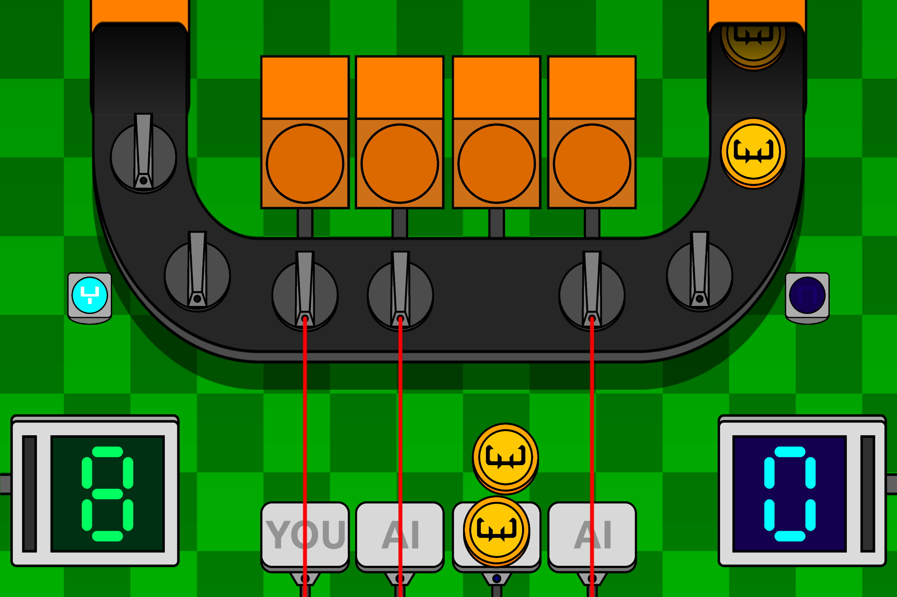
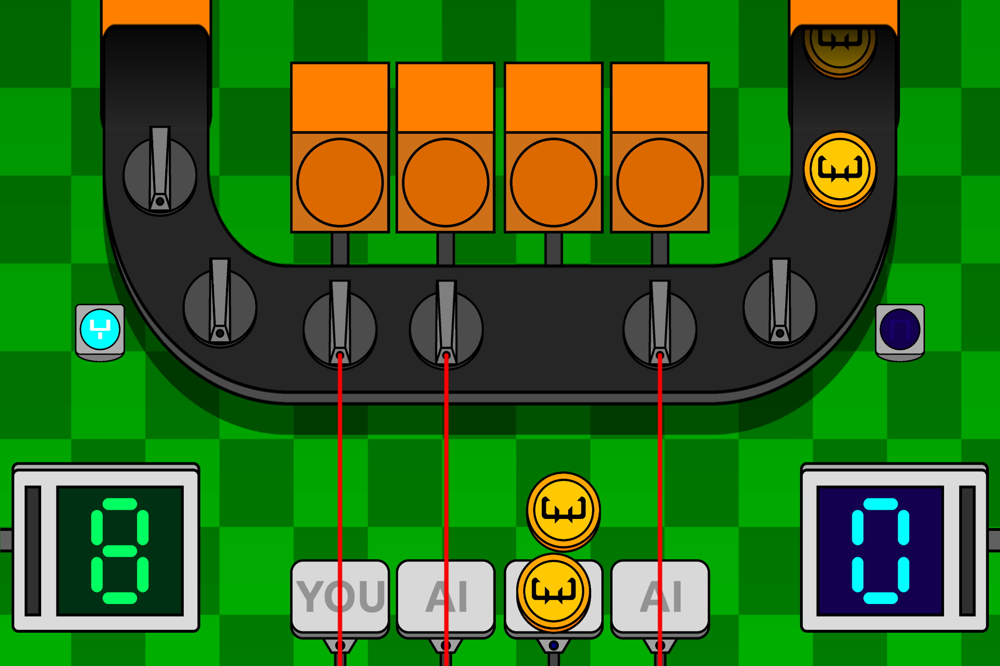

Coin Conquest
 

Description
Coin Conquest is a digital, casino style game, based on the minigame "Fruit Cahoots" from the Mario Party game series by Nintendo.
It was developed using GameMaker Studio by YoYo Games as part of my Game Design studies at the Hanze University of Applied Sciences Groningen.
Coin Conquest runs on Windows PCs and tablets, and is playable using a keyboard and mouse, only a mouse, or a touchscreen.
Vınсenт's Thoughts
In this project I learned to code in the engine specific "GameMaker Language" and was intrigued by some of the convenient features it offers. I also found that the game, through its visual design, slight animations and sound design is rather effectively addicting despite its minimalist content, especially when tested on tablets.